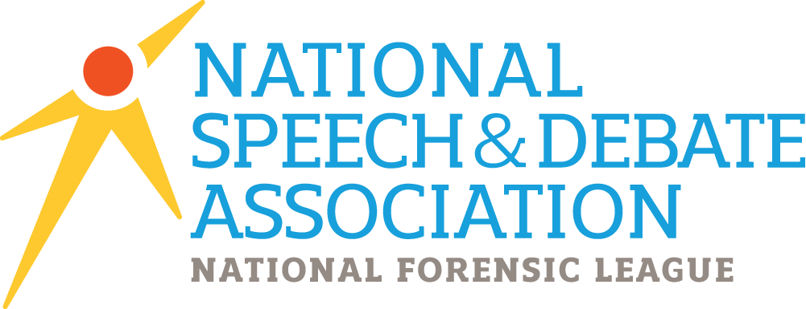

Speak with purpose. Compete with impact.
Thursdays 2:50–3:40 PM — Miss Vander Linden’s Room
We are not just an after-school hangout. We are high achievers with high standards, competing at district, regional, and national levels. We proudly represent our opinions and our school, aiming for recognition and prestige.
Because this is bigger than a club — it’s a shot at national recognition, representing Bioscience with pride, and carrying our colors onto big stages. It’s about legacy, respect, and showing our voices can lead.
The National Speech & Debate Association (NSDA) is the national body for competitive debate since 1925. It sets event rules, runs district and national tournaments, and tracks achievement points. Being NSDA-aligned connects us to a nationwide community of excellence in speaking and leadership.
Membership open to all Bioscience students in good standing. We support free speech within NSDA rules. No personal attacks or hate speech allowed.
Where are tournaments held? In Phoenix area, Nationals rotate: 2025 Iowa, 2026 Virginia, 2027 Phoenix.
Do I debate my own opinions? Sometimes. Public Forum uses coin flip to pick sides. In other formats, sides are assigned and you’ll argue both pro and con.
Are political opinions allowed? Yes, but focused on policies, not specific politicians.
Will I get penalized? No, unless speech is hateful or personal attacks.
Costs? Club covers $150 registration; extra fees fundraised.
Ahnaf K — Co-Founder
Gregory G — Co-Founder